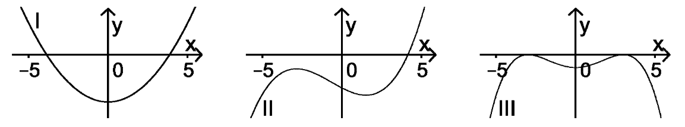

Bayerisches Abitur in Mathematik 2014¶
Aufgabe
Der Graph einer in \(\mathbb R\) definierten Funktion \(g : x\mapsto g(x)\) besitzt für \(-5\leq x\leq 5\) zwei Wendepunkte. Entscheiden Sie, welcher der Graphen I, II und III zur zweiten Ableitungsfunktion \(g''\) von \(g\) gehört. Begründen Sie Ihre Entscheidung.
Lösung
In der zweiten Ableitung einer Funktion lässt sich das Krümmungsverhalten ablesen. Da die Funktion \(g\) zwei Wendepunkte im beschriebenen Intervall haben soll, muss die zweite Ableitung \(g''\) hier zwei Nullstellen mit Vorzeichenwechsel aufweisen, also Übergänge von einer Linkskrümmung (\(g''>0\)) zu einer Rechtskrümmung (\(g''<0\)), bzw. von einer Rechtskrümmung zu einer Linkskrümmung hervorrufen. Der einzige Graph, der dies erfüllt ist I.
Mit Sage wollen wir nun versuchen, mögliche Formen von \(g\) aus den vorgegebenen zweiten Ableitungsfunktionen zu konstruieren. Die zweiten Ableitungsfunktionen haben die Form von Polynomen zweiter (I), dritter (II) und vierter Ordnung (III). Durch Verwenden der Nullstellen können wir Polynome mit ähnlichem Verhalten konstruieren:
In den folgenden Funktionsgraphen sind die Nullstellen, die zu Wendepunkten gehören, durch rote Punkte markiert.
Abschließend bestätigen wir unsere Überlegung, indem wir die Funktionen zweifach integrieren. In den Graphen sind die Wendepunkte durch rote Punkte markiert.